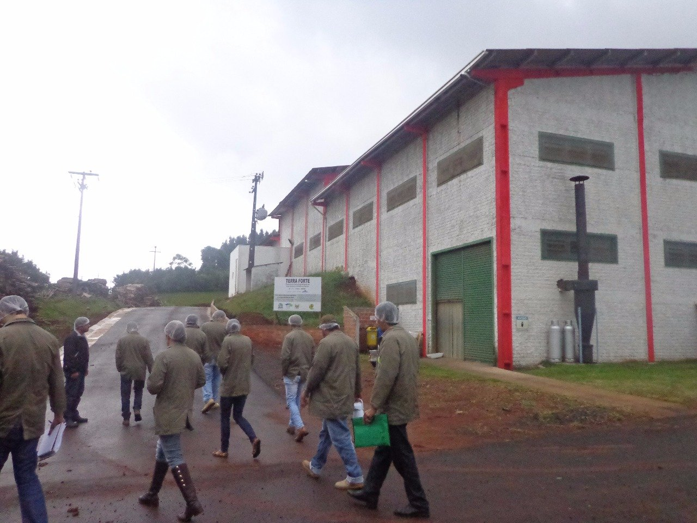
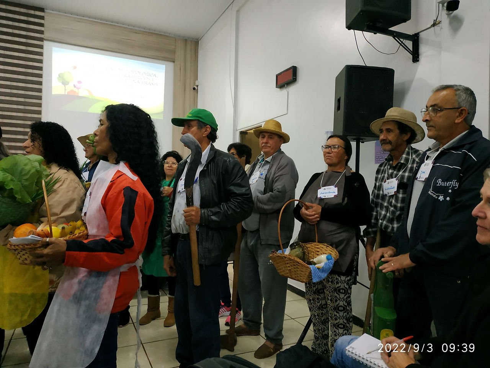

Cooperativismo e Economia Solidária
Cooperativismo, organizações econômicas coletivas, economia solidária e autogestão.
NECOOP · UFFS
Pesquisa, extensão e formação construídas em diálogo com organizações, comunidades e territórios.

Diferentes temas convergem no trabalho do Núcleo a partir da cooperação, da organização coletiva e da transformação social.

Cooperativismo, organizações econômicas coletivas, economia solidária e autogestão.

Pesquisa, extensão e formação voltadas aos processos de transição agroecológica.

Assentamentos, organizações sociais e processos econômicos e produtivos da Reforma Agrária.

Processos educativos, metodologias, materiais pedagógicos e experiências de formação.